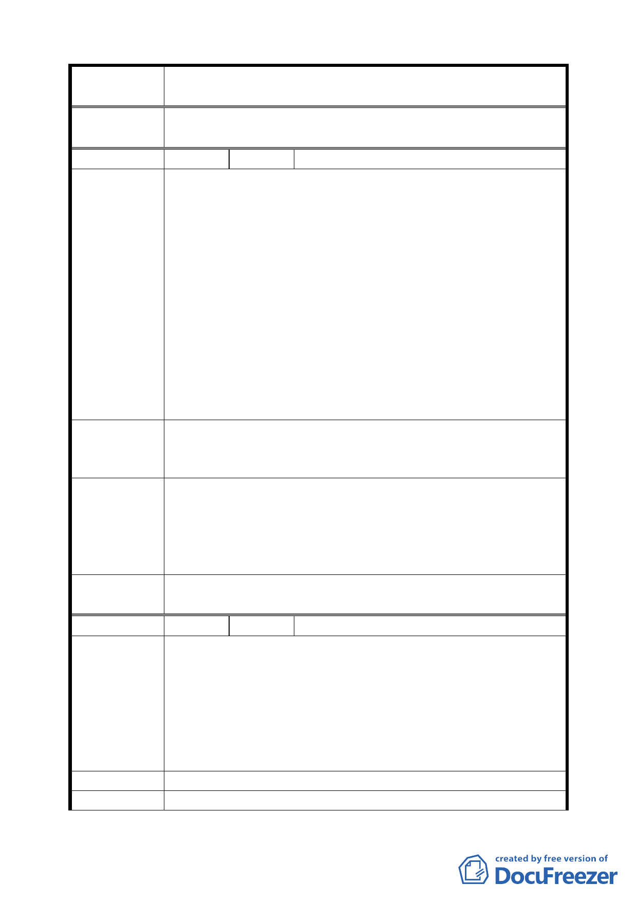

案 名 臺北市文山區都市計畫通盤檢討（主要計畫）案
委員會議
決議
同編號 19。
編 號 ２１ 陳情人 王濋諭等 8 位（09430074500）
建議位置：華興段四小段 312、313 地號。
建議理由：
一、313 地號緊鄰堤防外綠地公園，該綠地公園面積廣大，
綠化及民眾休憩活動空間充裕，實在不必要在旁邊另闢
一塊綠地，平白造成民眾（土地所有權人）的損失。早
陳情理由
期計畫時，或許還沒有堤防外綠地的作法，但時代變遷，
（木柵）
如今堤防外綠地的規劃完善，何需在緊鄰的土地徵收民
眾土地再作小綠地，造成民怨，也無端增加政府的負擔。
二、312 地號為 8 米計畫道路，然而西側緊鄰 10 米堤防道路，
兩路之間最接近之處僅相距 6 米，最寬的距離也不過 40
幾米，本人於當地居住超過 30 年，認為附近居民使用現
有的和興路及堤防道路，已然足夠，實無須在如此接近
的距離內，再開一條 8 米道路。
一、廢除 313 地號上的綠地計畫。
建 議 辦 法 二、廢除 312 地號上多餘的計畫道路，或縮減該計畫道路的
寬度，還土地給人民。
一、本案 8 公尺計畫道路，市府基於消防安全、交通進出之
專案小組
考量，評估後仍有開闢需要，故維持原計畫。
審 查 結 論 二、關於 313 號綠地深度為 6 公尺至 13 公尺寬，無法建築使
（94.7.4）
用，故維持綠地，基於地主權益，移請市府工務局、公
園處儘速編列預算徵收開闢。
委員會議
決議
依專案小處審查結論辦理。
編 號 ２２ 陳情人 孫仲達（09430082800）
建議位置：華興段四小段 338-4、299-2 地號（和興路 44 巷
70 號）。
陳情理由
（木柵）
建議理由：
本地號列為綠地限建已久，市府囿於財源未能徵收，於私而
言，我們每年繳交鉅額地價稅，卻不能地盡其用；於公而言，
堤外已有大幅綠地闢為木柵河濱公園，此地號面積太小，亦
不宜闢為公園使用。
建 議 辦 法 請更改地目為「建地」。
專 案 小 組 同編號 21。
一四